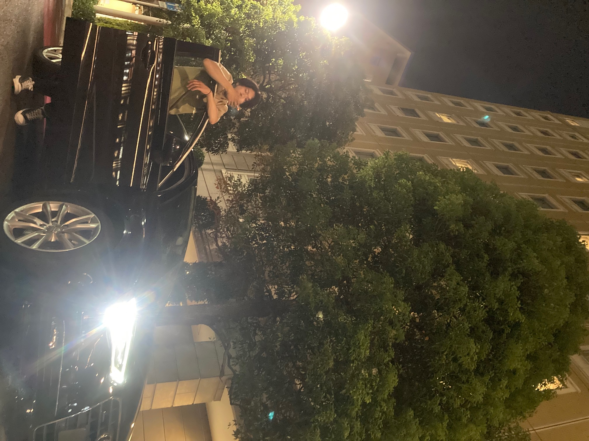
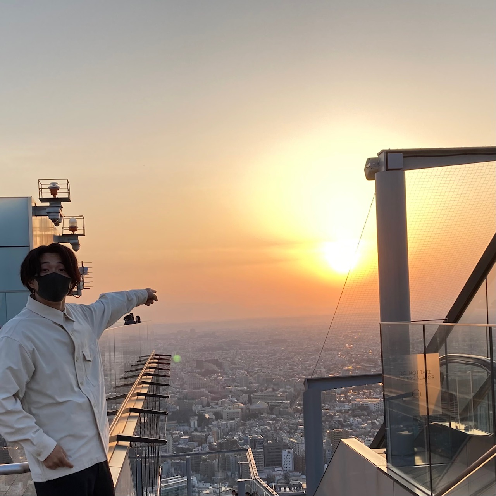
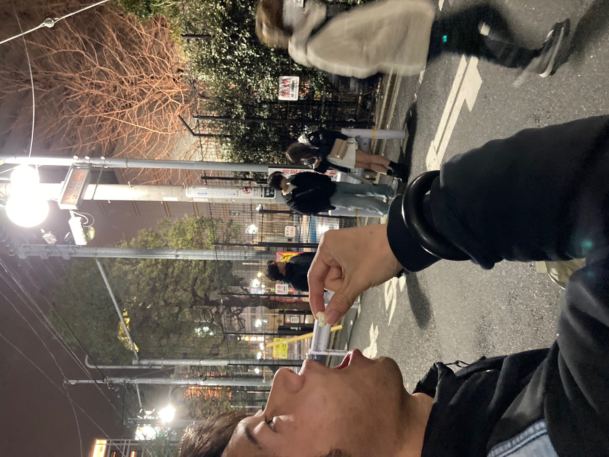
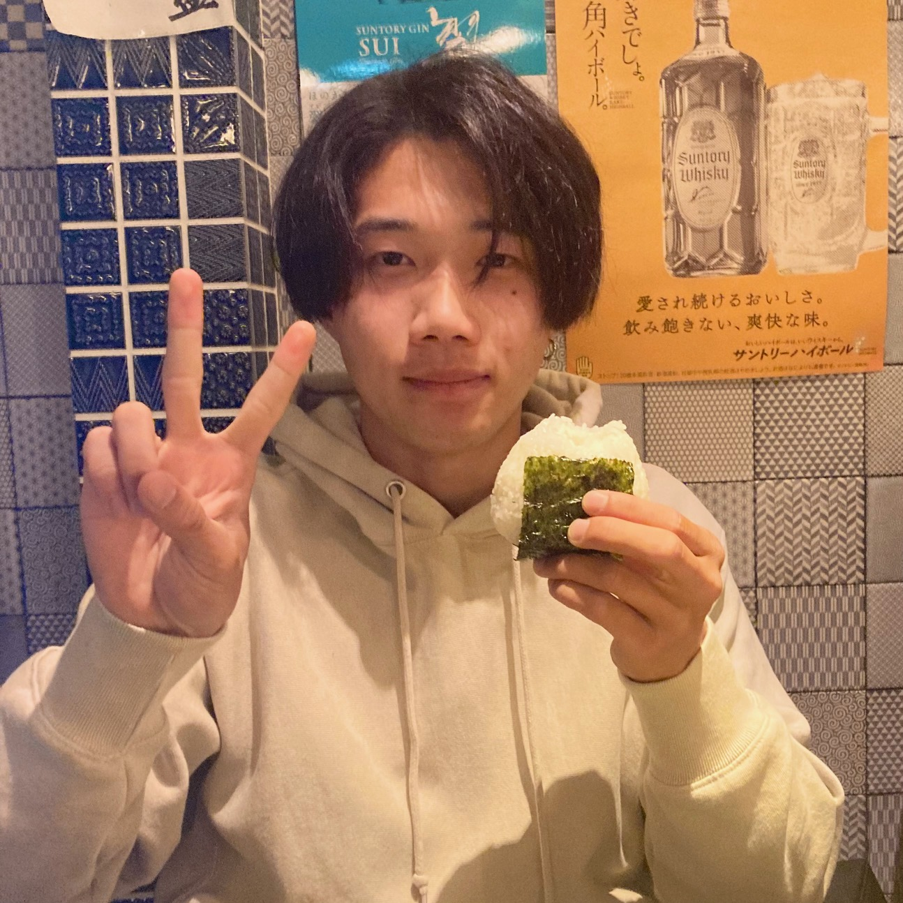
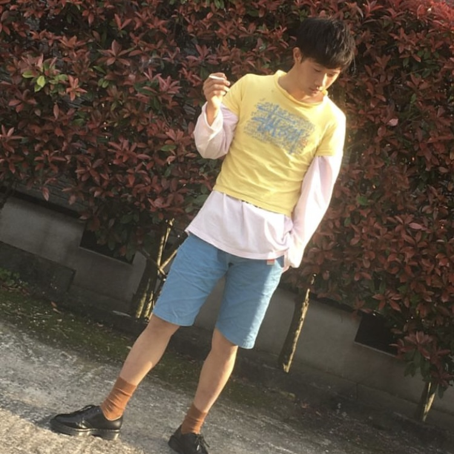
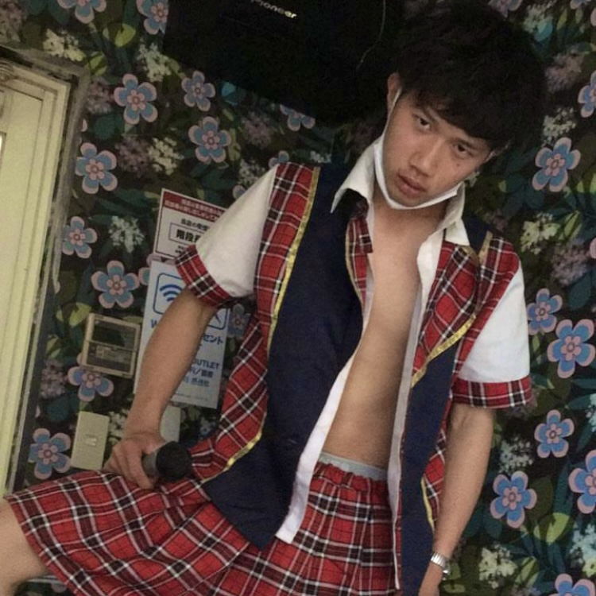
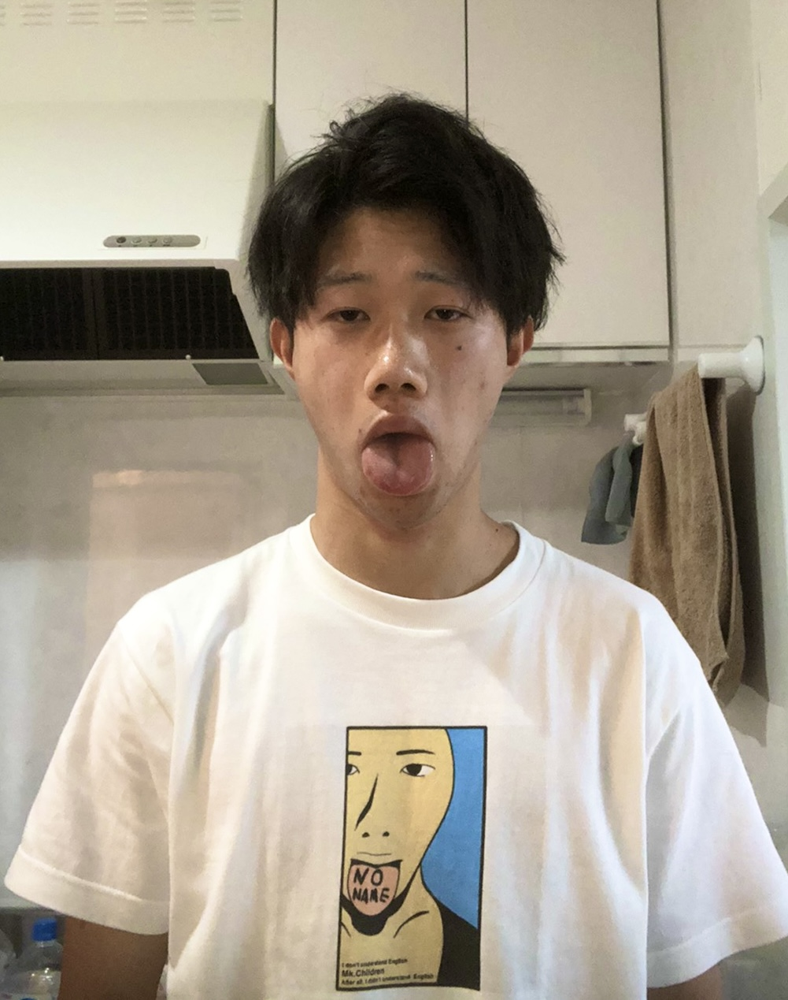

こがまさやについて
こがまさやは、岩手県奥州市出身のプロ野球選手であり、投手および指名打者として活躍しています。1994年7月5日生まれで、現在はロサンゼルス・ドジャースに所属しています。
以下はこがまさやの経歴と主な成績です：
- 生年月日: 1994年7月5日
- 出身地: 岩手県奥州市
- ポジション: 投手、指名打者
- 所属チーム: ロサンゼルス・ドジャース
- 主な成績:
- MLBオールスターゲーム選出 (2018, 2021, 2022)
- シーズンMVP受賞 (2021)
- シーズン新人王受賞 (2018)
- シルバースラッガー賞受賞 (2021)
- エドガー・マルティネス賞受賞 (2021)
- プロフェッショナルな実績:
- NPBデビュー (2013, 北海道日本ハムファイターズ)
- MLBデビュー (2018, ロサンゼルス・エンゼルス)
- 最速記録: 165km/hの速球
- 二刀流選手としての成功


ライブ情報
- 2024年10月5日（土） - 日本武道館
- 2024年11月23日（土） - 東京ドームシティホール
- 2025年2月8日（土） - 横浜アリーナ
- 2025年5月18日（土） - 渋谷公会堂
- 2025年9月6日（土） - さいたまスーパーアリーナ
全国ツアー情報
- 2025年3月8日（土） - 福岡国際センター
- 2025年3月15日（土） - 大阪城ホール
- 2025年4月12日（土） - 名古屋国際会議場
- 2025年4月19日（土） - 札幌ドーム
- 2025年5月10日（土） - 広島グリーンアリーナ
フォトギャラリー




